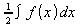
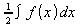

Documentation / User FAQ / Formula/Math / Previous-Next
Select Format-Text Mode.
This will change the formatting of your formula such that fractions and large operators (such as integral signs) are smaller. Furthermore the limits of large operators are placed to the right of the operator rather than above and below.
Example:
 becomes
in
textmode.
becomes
in
textmode.
This setting is reversed if you select Format-Text Mode again.